第七段階 検証報告
A. 保存・反映先
独立リポジトリ merkatzzz/tsugime-transport-lab / stage7-development。GitHubのmain、本編、保存版1〜5は変更していません。
実験URL：https://tsugime-architecture-transport-lab.merkatzzz.chatgpt.site
第六段階は stage6-frozen = 626e4cea2fa902f367e85ecfc4e0ea519f747705 をGitHubに固定。完全ソースZIPと実ビルドTARを別途保存し、タグから独立展開して106件を再実行しました。保存証跡にハッシュ・構成・復元結果を記録。サイト保存版10も維持。比較用第六段階は古い保存版の入れ子を省いたコピーです。
公開初回は、現行ZIPへ旧版完全ZIPを重複内包した結果、27,528,702bytesが1ファイル25MiBの配信上限を超えて失敗。重複を外して旧版完全ZIPを別配布にし、配布物のサイズ検査を追加しました。3D機能の変更はありません。
現行のソースZIP、設計・配置資料、復元・再開READMEも同梱しています。公開版のソースSHAはSites保存版のprovenanceとGitHubのブランチで照合します。
B. 実装結果
40搬送体・50基本チャンク。8×8×6mの規格、搬送離隔0.2m、二搬送デッキ、H1/H2・C0・遠隔往復・90度回転を維持しました。
| 対象 | 実装した内容 |
|---|
| 三層の住宅 | AでEV経由の実経路を持つ同系統住宅群。R1/R4/K1を部分改築し、新V1/V2/V3を中央・南側へ配置。Bで移動・分散 |
| 複数チャンク一体搬送 | V1＝3チャンクL型、V2＝2チャンク横長住宅、Q1＝2チャンク廊下。単独型・H1/H2分割型と混在 |
| 一体内部の連続性 | V1/V2/Q1のセル内部境界に搬送シャッター・不要な外壁なし。通常の居室間仕切りは維持 |
| 可変開口 | 幅6m同士、幅広と2m小開口、片寄せ小開口、1.5m廊下を許可プロファイルで接続 |
| 壁の実収納 | 20バンク・240枚の不透明板を折畳み。開閉0.65実秒、搬送前閉鎖と着床後展開を待機 |
| 開口端部 | 深さ0.9mの見切りで、襟0.26mと壁後退0.5mの間の斜めの抜けを封止 |
| 不要シャッター | 遠隔D1〜D4は14面→ドッキング用1面。内部3接続は搬送中も常時開通 |
| 点検廊下Q1 | 2チャンク・実幅約1.38m・真の斜行区間。Bで挿入、旧設備室W1へ到達、V1へ枝分かれ |
| 通常扉 | 透明化せず内開き。回転扇形・途中の身体衝突・家具・実メッシュ外形を検査 |
| 泉の再配置 | 5基を維持。P1/N1を第一層中央寄り、P3/N3を第三層南へ。N4回転とPA/PBは維持 |
| 遠隔帰還予告 | 8実秒の自由帰還猶予、残り4秒で再告知。その後必要な実経路退避 |
| EV操作 | 物理乗車→E閉扉→閉鎖後の文字選択→昇降→開扉。現在階不可・取消で同階開扉・外部は呼出のみ |
全ABCの完成座標と接続はphases.json、新住宅と対応開口は改築データ、三層図・接続成分図は本ページ下部です。詳細な寸法・状態遷移・生成規則はSTAGE7資料に記載しています。
V3はA/Cで第三層、Bで第一層。V2はA/Cで第二層、Bで第三層。V1は第一層で南北に移動。全住宅を同じ間取りの単独セルにしてはいません。新しい多セル住宅に同乗してA→B→C→Aを通すテストも追加しました。
C. 搬送結果・既存機能
18計画（範囲3×方式2×遷移3）すべて成立。採用条件は134×50m・予約付き協調搬送です。
| 遷移 | 1倍速の移動時間 | 連続検査 | 最大同時 |
|---|
| A→B | 54.73秒 | 26,064 | 9体 |
| B→C | 70.73秒 | 38,165 | 10体 |
| C→A | 17.33秒 | 6,029 | 7体 |
一周142.80秒、警告・生物収納・壁/シャッター開閉を除きます。V3の第三層↔第一層移動は(84,0)の空列でデッキ間昇降しH1を回避。J1仮置きを(0,25.2)へ変更しました。その他の基幹経路と回転ベイを維持し、全計画を連続再検査しています。
H1/H2分離・再結合、L型集会室、東翼、C0保管/挿入、M1上下搬送、自動運行・実退避・区画別例外、通常扉、NPC2体と会話、R3一枚絵、環境音制御を回帰試験しました。
同じ住戸301→同じ店舗の経路はA=35.13m、B=22.63m、C=34.90m。C0近道を維持。生物・泉配置、遠隔/回転経路、供給室への12実歩行も出力しています。
D. 検証結果
| 対象 | 通過件数 |
|---|
| 現行第七段階 | 121 |
| 保存第六段階 | 106 |
| 保存第五段階 | 92 |
| 保存第四段階 | 70 |
| 保存第三段階 | 54 |
| 保存第二段階 | 44 |
| 保存第一段階 | 24 |
| 合計 | 511 |
最終結果・終了コードはtest-summary.json、テスト全文は同フォルダのtests-stage*.txt。初回に見つかった扉の閉鎖初フレームの判定漏れを修正し、固定通路を残す新仕様・L型の凹角に合わせた形状検査も更新。保存版のテスト自体は変更していません。
追加15件は複数セル構成・乗員同乗・三層A実到達・プロファイル拒否・可動壁待機・遠隔固定通路・Q1実歩行・扉回転・EV取消/操作・8実秒警告、さらに折畳み8量、斜め光線、6m開口通行、一体内部、扉の実メッシュ/家具干渉を含みます。
ABC×通常扉開閉の6条件で、露出した同法線重複面0。面監査。床裏と壁底の接触は別分類し、保管中のQ1の実床高も根拠にしています。折畳み板単独も途中8量の重複面0。通常歩行・Shift・正規開口・シャッター・搬送・地図との整合を再検査しました。
E. 未実装・目視未確認
第二中央EVは見送り。中央交差部/南側住宅前/東側店舗脇の3候補で、既存安定セルとの競合が22/2/1件、予約掃引との競合が147/37/57区間ありました。検討データ。一切の場所に設置不能という主張ではなく、別の局所再計画が必要です。
任意幅・任意位置の連続ドッキングではなく、指定プロファイルだけを対応させています。EVを使う階またぎ自動退避は未実装で、経路がなければ安全停止。旧型生物・秘密区域・泉の由来・本編経済・戦闘は対象外です。
共有ブラウザは利用可能でしたが、固定第六段階の復元コピーでも管理プレビューが relay could not open browser port 4173: timed out waiting for relay readiness で失敗。status/stopは停止。今回の改修が原因とは考えにくいものの、中継障害の根本原因は未特定です。別サーバーや別経路では迂回していません。
したがって実WebGLの目視、視点移動のチラつき、構図・操作感、折畳みの見栄え、実音量・ミュート・聴感は未確認。CPU形状・光線・操作・音声状態テストを、実画面試遊・聴感として報告しません。
F. 再開と差分
第七段階はstage7-developmentから再開。固定第六段階への復元はREADMEの非破壊worktree手順を使用。部分取り込みは機能単体ファイルでなく依存する生成・衝突・描画・UI・テストをまとめ、専用検証ブランチで差分を確認してください。
主要ファイルと取り込み単位はSTAGE7資料とREADME。新設体の寸法/ABC配置、泉の前後座標、扉/可動壁/EVの生成規則・制約を記載しています。既存保存版の削除や初期化はしていません。
搬送範囲・方式の比較図
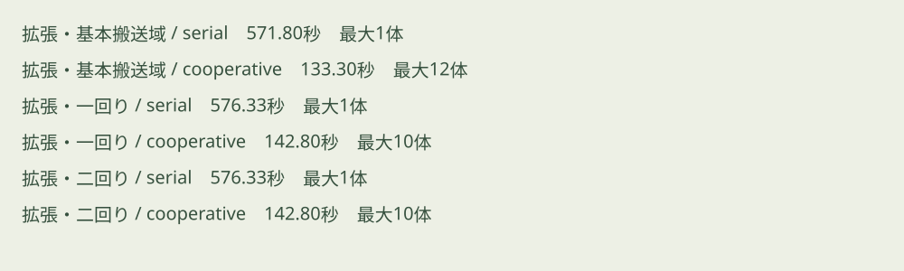
各周期の平面図
周期 A
第3層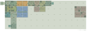
第2層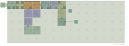
第1層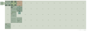
第3層の通路成分グラフ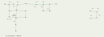
第2層の通路成分グラフ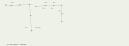
第1層の通路成分グラフ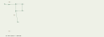
周期 B
第3層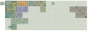
第2層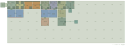
第1層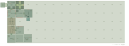
第3層の通路成分グラフ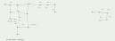
第2層の通路成分グラフ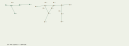
第1層の通路成分グラフ
周期 C
第3層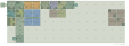
第2層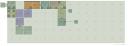
第1層 第3層の通路成分グラフ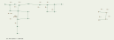
第2層の通路成分グラフ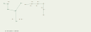
第1層の通路成分グラフ
遠隔区域と泉の配置
周期 A
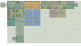
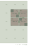
周期 B
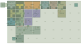
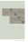
周期 C
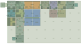
各遷移の搬送経路・保管と一時退避
A→B
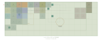
B→C
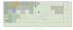
C→A
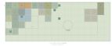